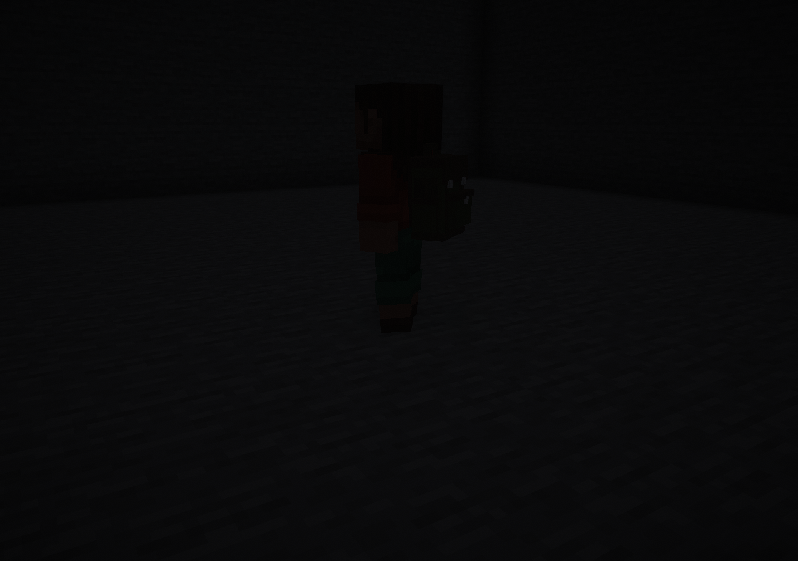
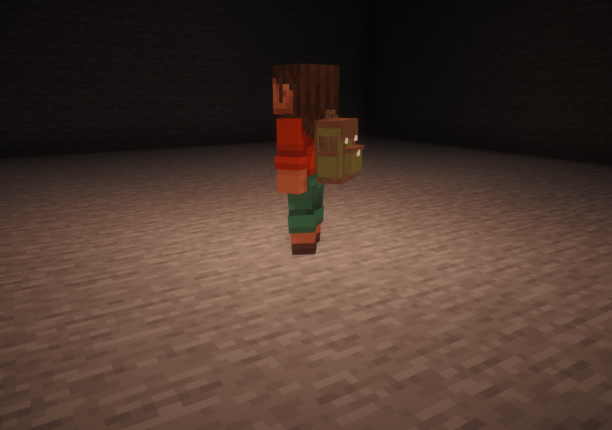
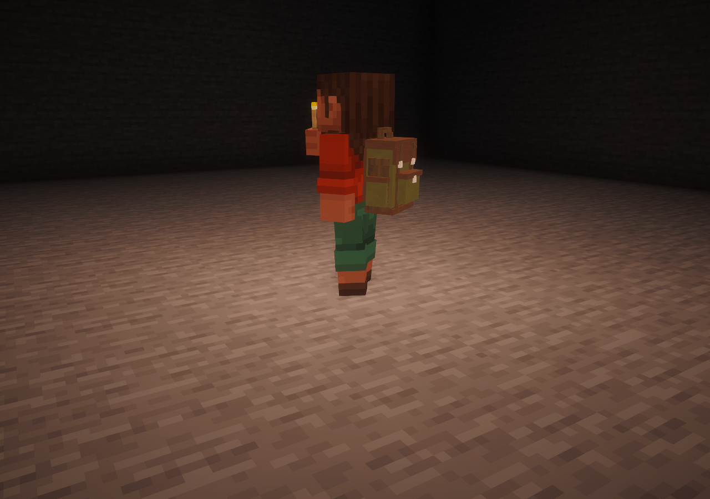
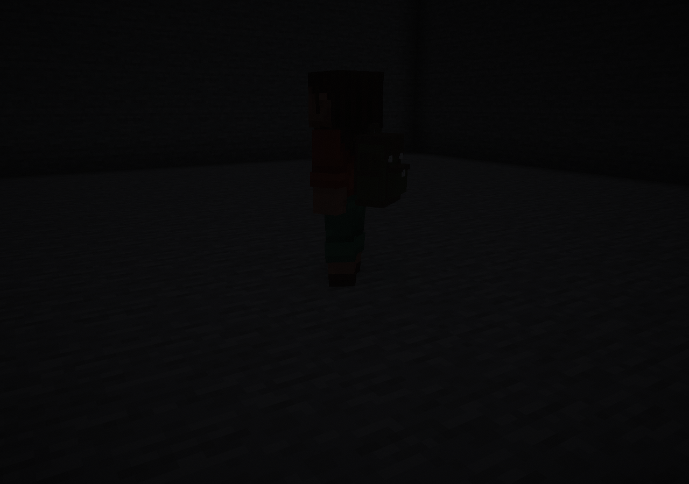

Quick Slot casts the same light as your hand
Actual remote-player captures with Iris and Complementary Unbound. The shader's separate handheld-light effect is disabled. Empty backpack mounts contribute no light in these comparisons.

No carried light

Torch in Quick Slot — level 14

Same torch held — level 14

Item removed — light clears
Rendering and lighting are independent. Storage, existing placements and gameplay remain unchanged. This is a held development build.
Verification record